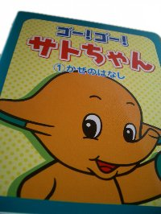
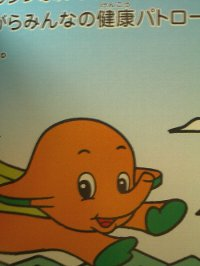
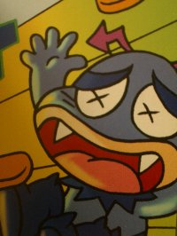
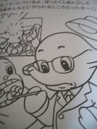
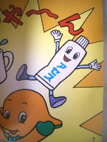

なないろまーぶる おまけコレクション

- なないろまーぶるTop
- >> Collection
- >> サトちゃん
- >> 絵本・ぬりえのコレクション
サトちゃん絵本・ぬりえのコレクション
ゴー！ゴー！サトちゃん かぜのはなし


今日も元気に健康パトロール


サトちゃんが健康パトロールをしていると、風邪を引いちゃった男の子（まもるくん）を発見。ビタミンくんとストナで撃退、という内容の絵本です。
この絵本の最後にはサトちゃんの歌と楽譜が載っています。私は音符が全く読めないので、どんなメロディーか分かりませんでした。が、街角にサトちゃんムーバーがあったので流して聴いて見ました。 体重制限（10kg）で乗ることが出来ず残念でした。
ゴー！ゴー！サトちゃん むしばのはなし



ドクターS。歯医者さんです。大人のサトちゃんだ〜（笑）。ぬりえも。 このイラストから、ドクターSは昔のサトちゃん、もしくはレトロサトちゃんのようですね。 （手と耳の色から推測しました。）

またまたサトちゃんが健康パトロールをしていると、 歯が痛くて困っているまもるくんを発見。 ドクターSに診てもらうと、「もうちょっとで虫歯になってたよ」と注意され、 アセスと一緒に虫歯菌を撃退、という内容です。
この絵本達、初めて存在を知ったとき、何が書いてあるのか 非常にわくわくしたのを覚えています。 ちょっと考えれば、どんな内容か推測できるのに。 フィギュアやストラップなどのグッズは一目でそれとわかるけれど、 実際手にするなり、中を見てみないとわからないこのような絵本は 手に入れるまでいろんな想像をさせてくれた楽しい存在です。
今ではサトちゃんのウェブページにも掲載されている、サトちゃんの歌 サトコちゃんの歌の存在をこの絵本で知り、単純にすごいなと感じました。 続編、出ないかな（笑） サトちゃん、いつもありがとう〜。私が風邪を引いたら、 ぜひ我が家にも来てください（笑）
この絵本の最後には、サトコちゃんの歌が載っています。
最終更新 2008.05.10
なないろまーぶるはYahoo!カテゴリに登録されています。